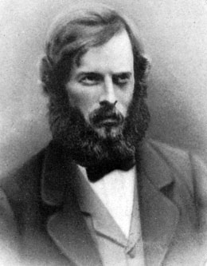

Chapter XVIII: Speech of Lo-Kout
“I did not come to tell you the things you want to hear for any friendship I hold for you, but to please this young man, Nannum-kin, whose father was your friend as well as mine. He now cares for me and my aged wife. I hate the white race.
Hear what I have to say. I am a son of the great Ow-hi and a descendant of We-owwicht. My mother was the daughter of Talth-scosum, the bravest warrior of his time on either side of the Rocky Mountains when the whites first came among us. It was said of him that in his wigwam hung many scalps of the enemy taken in battle on the buffalo plains. I am now an old man. The snows of many winters have passed over my head. I was born a warrior and have followed the trail since boyhood. I have taken the scalps of white men and in return have received many wounds.
Seven bullets have passed through my body, and you see my skull has been crushed. This wound I received in the fight with Gov. Stevens’ force at Walla Walla.
I am proud of these scars. They are the emblems of a warrior, a reminder of long ago when this country was ours and we were a proud and happy people. Once these valleys and mountains were ours. Our hunters brought in fish and game, our women, roots and berries. Our horses grazed on many hills. Our children played along the streams, while our old men and women slumbered in their lodges.
The coming of the pale-face changed all things as a cloud obscures the mid-day sun. They took our country and drove us from the homes we loved so well. The bones of our ancestors lay buried along these mountains and streams, which to us were both the cradle and the grave.
This land you now claim as yours was once the favorite camping ground of Ško-mow-wa, my uncle. He now sleeps beside this stream, a short distance below your house. On yonder hillside, within your fence, are the last remains of Tuh-noo-num, another uncle, whom Governor Stevens sent as an emissary of peace to this tribe during the war. That pile of rocks on the opposite hill holds the bones of Sokes-e-hi, my cousin.
Such is the history of all this country. Is it any wonder that we fought to keep it. All our great warriors are dead. They have gone the long trail; and it is well. They are not here now to witness the sad remnants of their once proud people debauched and a vanishing race, despised by their pale-faced conquerors. The red man’s sun has set. Let the white man behold his work.
I am Lo-kout, the son of Ow-hi. I have spoken.”
Splawn’s Account of Lo-Kout
This old warrior had an interesting history, had seen hard service in the war, was in the first battle when Major Haller was defeated at Toppenish, and again at Union Gap (the two Buttes) when they fought Major Rains; also at the battle of Walla Walla, when the great chief Pe-peu-mox-mox was killed; also participated in the attack on Governor Stevens, a few miles above the present city of Walla Walla; was in the fight that defeated Colonel Steptoe in the Palouse country; was in the attack on Seattle in 1856, and again at Connell’s Prairie. When the Indians surrendered to Colonel Wright in the Spokane country, he took his brother Qualchan’s wife, and together they went to live among the Flathead tribe, who were at war with the Blackfeet, on the opposite side of the Rocky Mountains. When these two tribes made peace, this soldier of fortune joined the Blackfeet in fighting their ancient enemies, the Sioux, but the invasion of the whole Indian country along the Missouri put an end to the tribal wars. They were compelled to join together against the common foe, the United States soldiers. He was at the battle of Little Big Horn, when Custer and all his men were massacred. When Sitting Bull and all the warriors retreated into Canada, he did not follow them, but told his faithful squaw, who was a daughter of Polatkin, a Spokane chief, that she could run things from now on to suit herself, as all the chiefs and warriors had gone; there would be no more war with the whites and his work was done. The squaw said, “We will now return to my country and live in peace.” They packed up and returned and settled at the mouth of the Spokane.
When Col. Steptoe was defeated in 1858, he was one of the Indian sharpshooters selected by Ka-mi-akin to pick off Captain O. H. P. Taylor and Lieutenant William Gaston, saying, “These two men must die if we are to win,” after which these officers were special targets of those unerring rifles. Thus fell two gallant men, victims of an ill-advised expedition.
In this old warrior I found the Indian guide Loolowcan, made famous in Theodore Winthrop’s book, Canoe and Saddle. (Timothy Egan wrote a book, The Good Rain, in 1991, which uses Winthrop’s book as a starting point to describe the Northwest. The town of Winthrop, Washington was also named for Theodore Winthrop.) He, being a son of Ow-hi and about the right age, I asked if in his younger days he was known by the name of Loolowcan and was guide to a white man from Fort Nisqually on Puget Sound to The Dalles, Oregon. He looked at me for a time and asked why I wanted to know. I said the man had written a book about that trip and had given the guide a bad reputation. He quickly arose to his feet; with flashing eyes, he said, “Yes, I was then Loolowcan but changed my name during the war later.”
“We were camped near Fort Nisqually at that time, when the fur trader brought the white man to our camp and asked Ow-hi to furnish him a guide, as he wanted to make a trip through Nah-cheez pass, and the Yakima country, to The Dalles, Oregon. My father made a bargain with him and told me to go. I did not like the man’s looks and said so but was ordered to get ready and start. He soon began to get cross and the farther we went the worse he got, and the night we stayed at the white men’s camp who were working on the road in the mountains, he kicked me with his boot as if I was a dog. When we arrived on Wenas creek, where some of our people were camped, I refused to go farther; he drew his revolver and told me I had to go with him to The Dalles. I would have killed him only for my cousin and aunt. I have often thought of that man and regretted I did not kill him. He was me-satch-ee.” (mean) Lo-Kout, recalling his time as guide to Theodore Winthrop